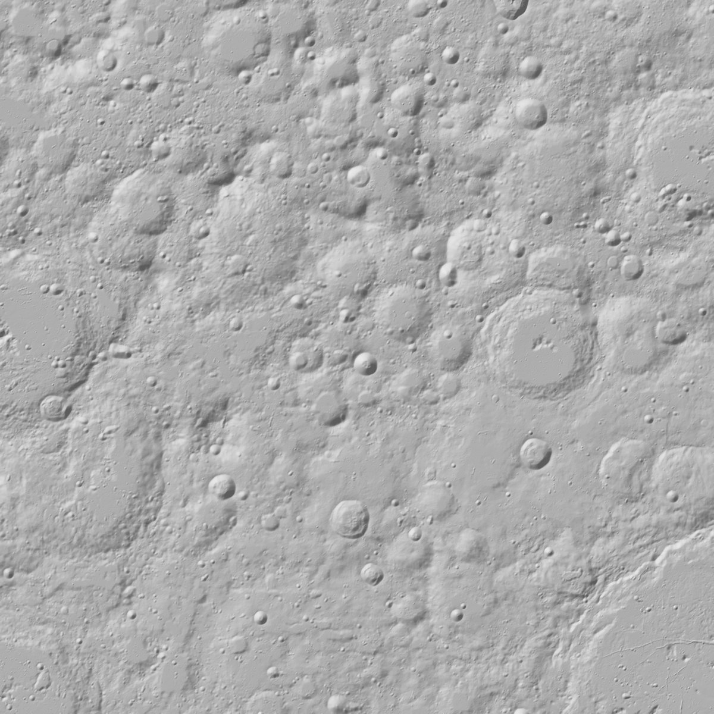
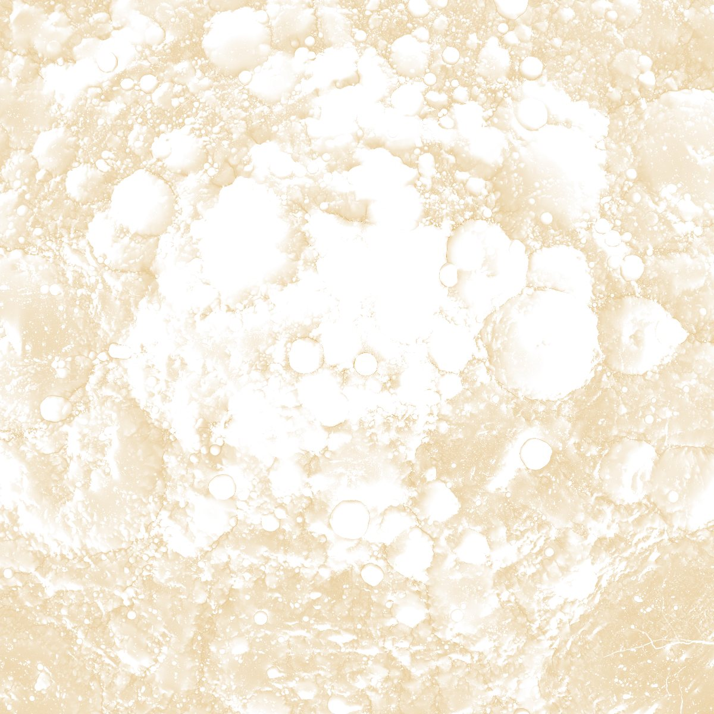

(00) Lunar south pole · 90° S
Long
Shadows
At the very south pole of the Moon the Sun never climbs more than 1.6° above the horizon, and at the landing sites around it only a few degrees more. In such a low Sun a 10 m mast casts a shadow longer than 350 m, and a small hill can hide the Sun for days. This tool shows where and when a base gets light and a direct line to Earth. It borrows two studies architects make for every building on Earth: who gets the sunlight, and what stands in the line of sight.
▶ Start here: a 60-second tour in seven stepsTwo modes, switched at the top of the page. Standard explains in plain words. Advanced shows the same results as tables of exact figures, with more data and controls.
Find a landing dateThe longest stretch of light →Real LOLA terrain, 200 km across, Sun 1.5° above the horizon.
(01) Landing sites
Where is there light, and where is there Earth?
These are 18 places near the Moon's south pole where a lander could set down. Each gets a different share of sunlight, which means power, and of time with Earth above the horizon, which means a direct radio link. Pick a site on the map or in the list, then open its details. Above the map you can step from the whole Moon to the map of the pole to its 3D terrain with moving shadows. Click the map to test a point of your own.


↑ Near side · toward Earth South pole · R 320 km · LOLAClick anywhere on the map to place your own point. Down to 76° S it is calculated with real terrain, in finer detail south of 84.5° S. The nine squares are NASA's Artemis III candidate regions (outlines from USGS).
Share of time with the Sun in view. NASA LOLA average maps, 18.6-year mean.
These figures are for the whole of 2027 at 10 m above the ground. On the other screens they follow the date, period and height you choose, so the same site shows other percentages there.
Chandrayaan-3, Chang'e-6, Blue Ghost and Apollo 11 are off this map: they landed far from the pole. Find them on the Whole Moon view.
Your list of points Advanced
One point per line: name, latitude, longitude (degrees; south is negative; east longitude). Up to 30 lines. Each is calculated at 10 m for the whole of 2027, with real terrain south of 76° S; south of 80° S it also gets temperature and ice.
Horizon: the Sun and Earth over the skyline of one site
Why so?
Compare sites and landing dates
All sites in one table Advanced
Sun elevation is measured from the horizon of a perfectly smooth Moon (0°). A high ridge sees a little below that line, so a site can be in sunlight with the Sun at 0° or even lower. Period values start at the landing date.
Base plan
(05) About